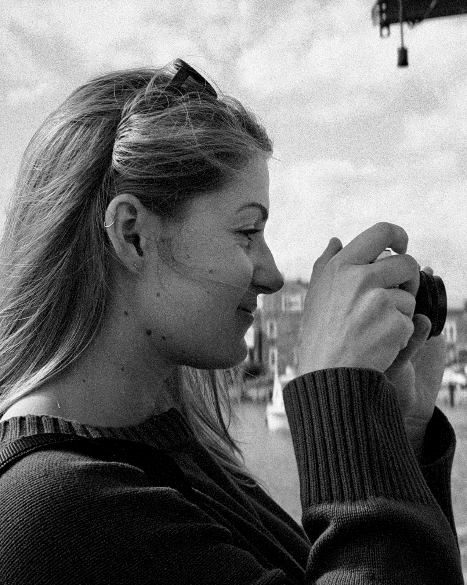

Yolande Bennett is the Assistant Digital Archivist at Massachusetts Archives, where she assists in making permanent historic state records available online through the Archives’ Digital Repository.
Since 2025, she has served on the Massachusetts State Historical Records Advisory Board as Archives Advisory Commissioner, assisting the board in supporting institutions, organizations, and repositories across the state that manage historical records.
She received her bachelor’s degree in Graphic Design from Lesley University in 2020, and a master’s in Library and Information Science with a concentration in Archives Management from Simmons University in 2023. Originally from Maine, she currently lives in Cambridge, Massachusetts.